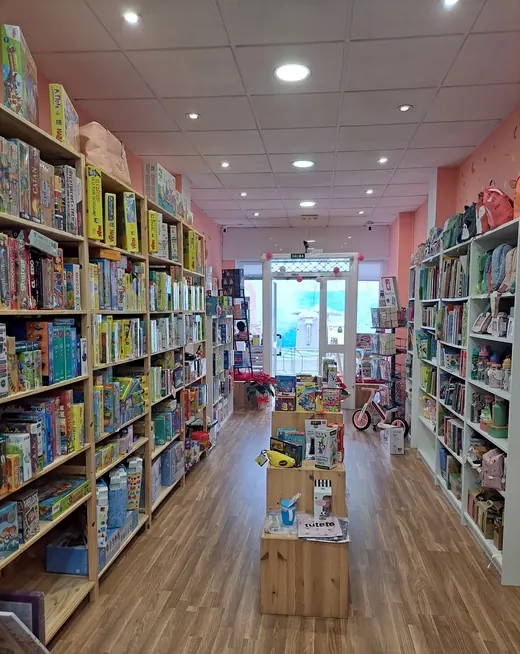
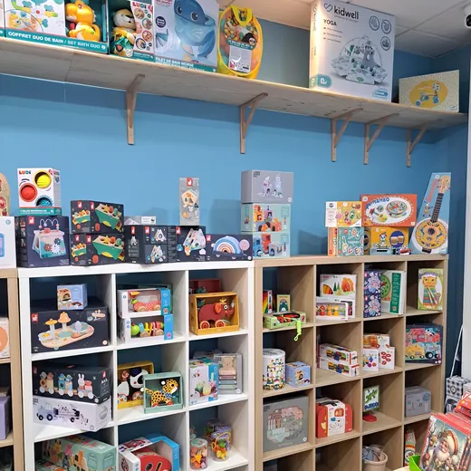
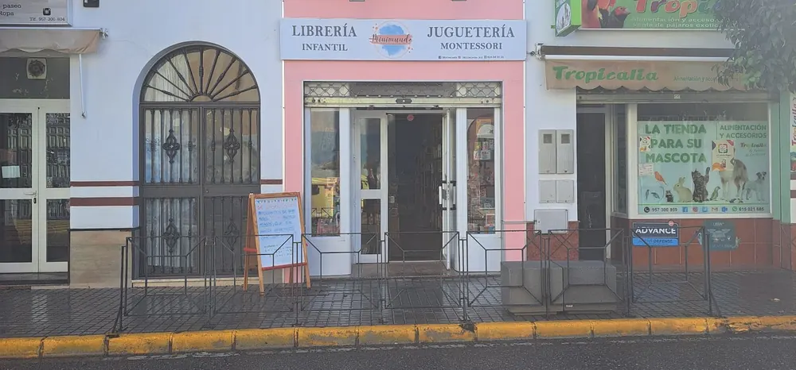

Del carrito al primer libro, sin salir de La Carlota.
Minimundo abre su segunda puerta en la Avenida de la Paz. En una, carritos, sillas de coche y ropa de bebé. En la de siempre, juguetería Montessori, juegos de mesa y libros infantiles.
Av. de la Paz, 59 · al lado de TropicaliaMañanas de 10:00 a 13:30Tardes desde las 17:30
BebéLa puerta nueva Libros y juegoLa de siempre
Todo, a su altura.
Aquí no ordenamos por secciones, sino por lo que mide tu hijo. Lo que necesita a los 50 centímetros está en una puerta. A los 115, en la otra.
-
115cm
Libros y juego
Hacia los 6 años: ya lee solo
Primeros lectores, juegos de mesa para toda la familia y papelería creativa para el cole.
-
95cm
Libros y juego
Hacia los 3 años: lo quiere hacer él
Puzles, juego simbólico, cuentos para leer juntos y los primeros juegos de mesa.
-
75cm
BebéLibros y juego
Hacia el año: lo toca todo
Juguete Montessori y de madera, libros de cartón y de tela, ropa y conjuntos para cuando ya gatea.
-
50cm
Bebé
Antes de nacer y los primeros meses
Carrito, silla de coche, canastilla y la primera ropa. Lo que más cuesta elegir, y lo que mejor se elige con calma.
Alturas aproximadas: mediana de los patrones de crecimiento infantil de la OMS. Cada niño lleva su ritmo.
Elige su carrito sin prisa, y sin ir a Córdoba.
El carrito es lo primero que compras para tu hijo y lo que más dudas da. Por eso en la puerta nueva se atiende con cita: lo pliegas, lo empujas por la acera y me cuentas cómo vais a vivir, antes de decidir nada.
- Carritos y sillas de paseocon cita para probarlos
- Sillas de coche i-Sizese eligen por su altura
- Ropa y conjuntos de bebéde recién nacido en adelante
- Canastilla y regalo de nacimientopreparado para regalar
¿Sabías que las sillas de coche nuevas se eligen por centímetros? La norma i-Size (R129) clasifica las sillas por la estatura del niño, no por su peso. Por eso aquí todo empieza midiendo.


Juguetes que se tocan y libros que se leen juntos.
La puerta de siempre: juegos, libros y juguetes educativos seleccionados con cariño. Madera, cartón y papel antes que pilas.
- Juguetería Montessori
- Juegos de mesa y puzles
- Libros infantiles
- Primeros lectores
- Papelería creativa
- Cumpleaños y comunión
Soy Marta, mamá de Daniela y Andrea.
Empecé con libros y juguetes elegidos uno a uno. Ahora abro la puerta de al lado para lo que viene antes: el carrito, la silla y la primera ropa.
Así lo que necesitéis, del primer paseo al primer libro, está en la misma acera. Y quien te ayuda a elegir el carrito es quien después te verá crecer.
Marta · Minimundo

La fachada rosa de la Avenida de la Paz.
- Dónde
- Av. de la Paz, 59 · 14100 La Carlota (Córdoba). Al lado de Tropicalia.
- Horario
- Mañanas de 10:00 a 13:30. Tardes desde las 17:30.
- Teléfono
- 624 84 05 24
- @minimundo_kid
Un mundo pequeño, con dos puertas.
Pásate con calma por la Avenida de la Paz. Y si estás esperando, haz tu hoja y pide cita para el carrito: lo elegimos juntas.